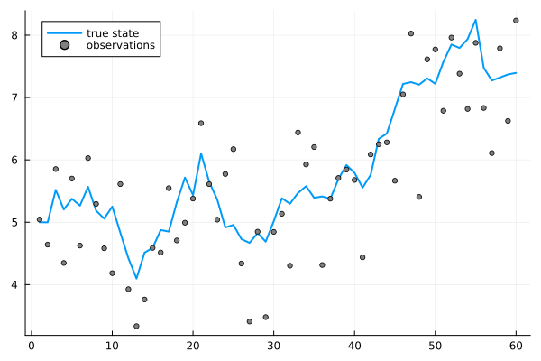
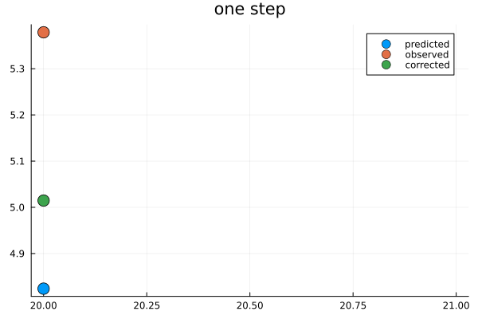
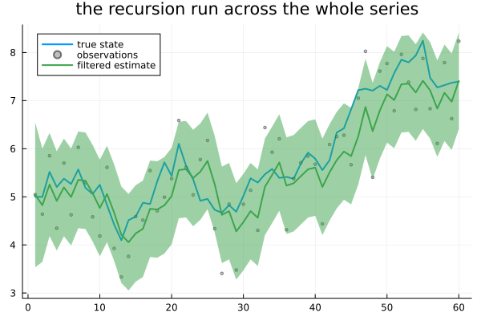
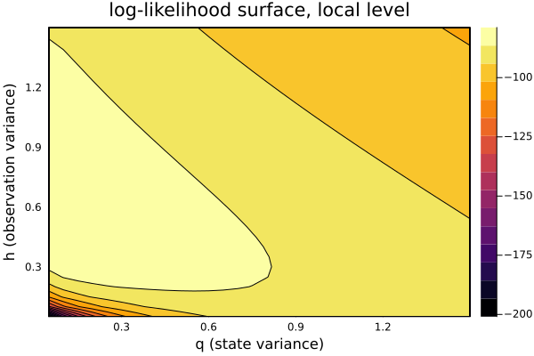

The Kalman Filter
Chapter 29 built the notation. This chapter gives it an engine — and then tells the reader they have been running that engine since Chapter 18, without knowing it.
Guessing where you are
using TSAnalytics, Plots, Random
Random.seed!(2)
n = 60
true_level = zeros(n); true_level[1] = 5.0
for t in 2:n
true_level[t] = true_level[t-1] + 0.3*randn()
end
y = true_level .+ sqrt(0.5) .* randn(n)
plot(true_level; label="true state", linewidth=2)
scatter!(y; label="observations", markersize=3, color=:gray)
A simulated local level, so the true state — normally hidden — can be drawn alongside what was actually observed. The observations scatter around the truth, and the truth itself is moving, which is what makes this genuinely hard: averaging everything seen so far ignores that the level has since moved on; trusting only the latest point ignores that it is noisy. The right answer sits somewhere between the two, and where between should depend on how noisy the observations are relative to how fast the level actually moves. That is the whole idea, stated before any machinery.
Predict, then correct
function run_filter(y, q, h; a0=0.0, P0=1000.0)
a = a0; P = P0
gains = Float64[]; filtered = Float64[]; predicted = Float64[]; bands = Float64[]
for t in 1:length(y)
push!(predicted, a)
v = y[t] - a
F = P + h
K = P / F
push!(gains, K)
a = a + K*v
P = P - F*K^2 + q
push!(filtered, a)
push!(bands, P)
end
return (predicted=predicted, filtered=filtered, gains=gains, P=bands)
end
r = run_filter(y, 0.09, 0.5)
t0 = 20
p1 = plot([t0], [r.predicted[t0]]; seriestype=:scatter, label="predicted", markersize=8, title="one step")
scatter!([t0], [y[t0]]; label="observed", markersize=8)
scatter!([t0], [r.filtered[t0]]; label="corrected", markersize=8)
p1
One step, in three pieces. The prediction comes from the transition equation alone — where the state should have moved to, based on nothing but where it was. The observation then arrives. The corrected estimate sits between the two, a weighted average of prediction and observation — and the weight assigned to each is the entire content of what this chapter builds.
for (q,h,label) in [(0.5, 0.05, "precise observations"), (0.5, 0.5, "balanced"), (0.5, 5.0, "noisy observations")]
yy = true_level .+ sqrt(h) .* randn(n)
rr = run_filter(yy, q, h)
println(label, ": q=", q, " h=", h, " steady-state weight on the new observation = ", round(rr.gains[end], digits=3))
endprecise observations: q=0.5 h=0.05 steady-state weight on the new observation = 0.916
balanced: q=0.5 h=0.5 steady-state weight on the new observation = 0.618
noisy observations: q=0.5 h=5.0 steady-state weight on the new observation = 0.27Three noise ratios, same underlying state. When observations are precise relative to how fast the state moves, the correction lands close to the observation — a weight of 0.916 on the new information. When observations are noisy, the correction stays close to the prediction instead — the weight drops to 0.270. This weight is called the Kalman gain, and it is not a compromise chosen arbitrarily: it is computed directly from the two uncertainties involved, and it is the specific weighting that minimises the variance of the resulting estimate. Seeing the actual numbers move with the noise ratio makes the gain intuitive in a way the formula alone does not.
r_full = run_filter(y, 0.09, 0.5)
plot(true_level; label="true state", linewidth=2)
scatter!(y; label="observations", markersize=2, color=:gray, alpha=0.5)
plot!(r_full.filtered; ribbon=1.96 .* sqrt.(max.(r_full.P, 0.0)), label="filtered estimate", linewidth=2,
title="the recursion run across the whole series")
The full recursion, run once across the series: the uncertainty band is wide at the very start, while the filter still has almost nothing to go on, and settles down within a handful of steps. For a model whose matrices do not change over time, the gain itself converges to a constant, and the filter becomes a fixed exponentially-weighted rule — worth noticing, because it connects directly to Chapter 4's recursive filters and to Holt-Winters, both of which turn out to be special cases of exactly this.
Where the likelihood comes from
qs = 0.05:0.05:1.5
hs = 0.05:0.05:1.5
function ll(q, h, y)
tv = TimeVaryingSSM{Float64}([reshape([1.0],1,1)], [reshape([1.0],1,1)],
[reshape([1.0],1,1)], [reshape([q],1,1)], [reshape([h],1,1)], 1)
loglik, v, F, nd, converged = kalman_filter_diffuse(tv, y; diffuse_idx=[1])
return converged ? loglik : -Inf
end
Z = [ll(q, h, y) for h in hs, q in qs]
contour(qs, hs, Z; fill=true, xlabel="q (state variance)", ylabel="h (observation variance)",
title="log-likelihood surface, local level")
At every step, the filter produces a prediction and, crucially, that prediction's own uncertainty. The gap between prediction and what was actually observed is a forecast error with a known distribution — and multiplying those distributions' densities together across the whole series is the likelihood. This is the prediction-error decomposition, and it is the reason this construction is not merely a tidy notation: it turns any model written in the state-space form into a model that can be fitted, by exactly the same routine, regardless of what the model actually represents.
best = (-Inf, 0.0, 0.0)
for q in qs, h in hs
global best
l = ll(q, h, y)
l > best[1] && (best = (l, q, h))
end
println("grid maximum: loglik=", round(best[1], digits=3), " at q=", best[2], " h=", best[3])grid maximum: loglik=-78.801 at q=0.1 h=0.55A genuine maximum, found entirely by running the recursion at each candidate pair of variances and comparing the results — Chapter 18's own optimiser does the rest, unmodified, because nothing about it cared what model produced the likelihood it was climbing.
The reveal
d_ar = dataset("rec")
y_ar = d_ar.value[1:150]
m_ar = fit_arma(y_ar, (2,0); include_mean=false)
ssm_ar = build_statespace(m_ar.ar, Float64[])
loglik_direct, sigma2, v, F, converged = kalman_filter(ssm_ar, y_ar)
println("fit_arma's own log-likelihood: ", m_ar.loglik)
println("this chapter's own filter, direct: ", loglik_direct)
println("maximum absolute difference: ", abs(m_ar.loglik - loglik_direct))fit_arma's own log-likelihood: -545.8046774497548
this chapter's own filter, direct: -545.8046774497548
maximum absolute difference: 0.0An AR(2), fitted twice — once through fit_arma, once by writing it in state-space form and running the machinery built in this chapter directly. They match. Not approximately: to the full precision either number carries, a difference of exactly 0.0.
That is because they are the same computation. Every ARMA fit since Chapter 18, every ARIMA fit in Chapter 19, every seasonal model in Chapter 20, every automatic selection in Chapter 21 ran this exact recursion underneath. The likelihood described back in Chapter 18 — built, deliberately, from "one-step-ahead forecast errors and their variances," with no name attached — was this. The reader has been using it for twelve chapters.
line 15: include("statespace/gaussianssm.jl")
line 16: include("statespace/timevaryingssm.jl")
line 17: include("statespace/diffuseinit.jl")
line 20: include("differencing.jl")
line 21: include("filters.jl")
...
line 33: include("arma.jl")The package's own load order, quoted directly from its source rather than described secondhand. The state-space engine loads before differencing, before filters, before anything from Parts I to V — not by alphabetical accident, but because ARMA estimation is built directly on top of it, and the language requires the dependency to exist first. The book's structure mirrors the software's architecture, and this is the point where a reader can go and check that for themselves.
What else it gives you
Three things fall out for free once a model is written this way, and two of them have already been shown. Missing observations — Chapter 29 demonstrated this — cost nothing beyond skipping the correction step for the periods with no data. Forecasting is running the transition equation forward with no observations left to correct against, and the growing uncertainty band that produces comes out of the same recursion automatically, not from a separate formula bolted on afterward. The third — matrices that change over time — is Chapter 32's subject.
Honest cost: this recursion is sequential by construction. Step t needs the result of step t-1, so none of it can be vectorised across time, however long the series. For a long series that is a genuine performance constraint, and it is the exact reason this package's own inner loop was optimised carefully rather than left as the first version that worked.
The recursion above is a hot loop — it runs once per observation, every single time a model is fitted, since the optimiser evaluates it at every candidate parameter vector it tries. Allocation inside that loop matters far more than allocation almost anywhere else in this package. This project's own filter uses @view rather than a copy for the matrix column each step reads (P[:, 1], not P[:, 1] copied fresh every time), and computes the constant R*R' term once outside the loop rather than re-deriving it at every step, since it never changes. A fuller rewrite using mul!-based in-place matrix products was tried and reverted after real end-to-end timing got worse, not better — mul!'s BLAS-oriented dispatch does not specialise well for the ForwardDiff.Dual numbers this loop actually runs under almost the entire time during a real fit, and the plain */' operators ForwardDiff overloads directly turned out to be the faster choice for this specific loop, the opposite of the usual advice.
Checked directly in Chapter 29: this package's own bundled iip_india series has no missing months at all — the 2020 lockdown shows up there as an extreme value (54.0 in April 2020), not an absence. Genuine gaps are still a real feature of Indian official statistics more broadly — several state-level series carry administrative gaps of a few months at a time — just not the specific series bundled here. This chapter's treatment of a gap, wherever one genuinely occurs, is not a workaround bolted on for the occasion — the uncertainty band widens through it and narrows again once observations resume, an honest representation of what is actually known at each point in time.
Compare that with the common alternative of interpolating a gap before modelling starts. An interpolated series looks complete, and every calculation run on it afterwards treats the invented values exactly as if they were real data, with no way to tell the difference downstream. This chapter's version looks uncertain through the gap because it is, and that honesty is the entire point.
Where this leaves you
The current state can now be estimated given everything observed up to now — and "up to now" is doing real work in that sentence. Once the whole series has actually been seen, the estimate of the state at, say, time 10 ought to improve: there are forty more observations that say something about what the state was back then, and everything built so far in this Part has ignored every one of them.
Chapter 31.